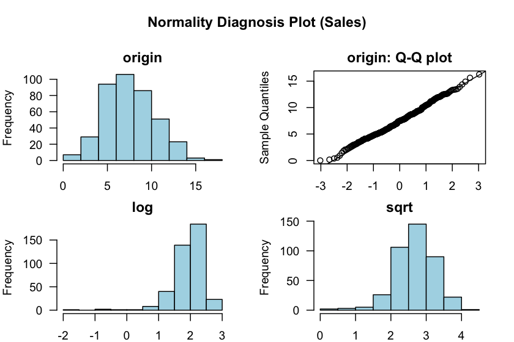
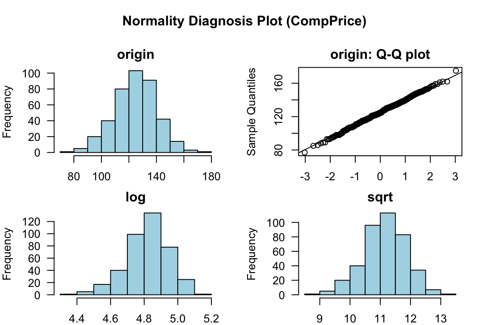
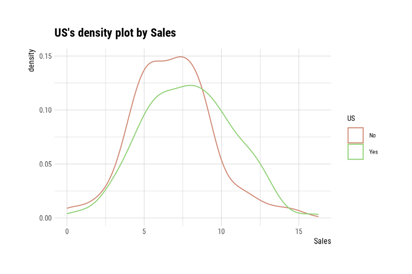
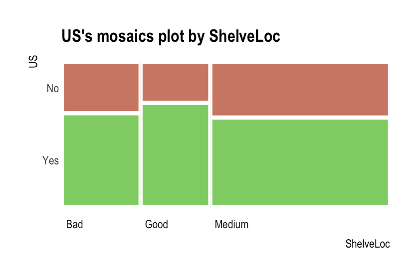
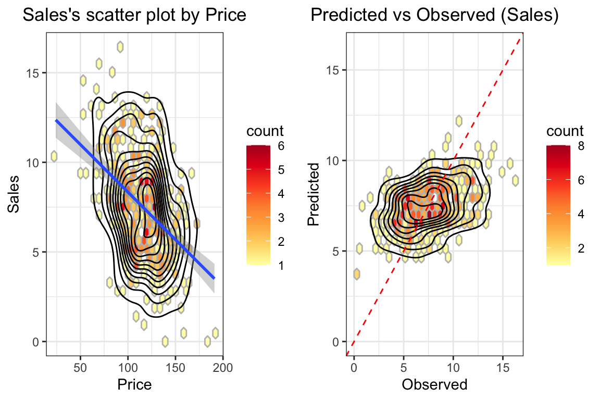
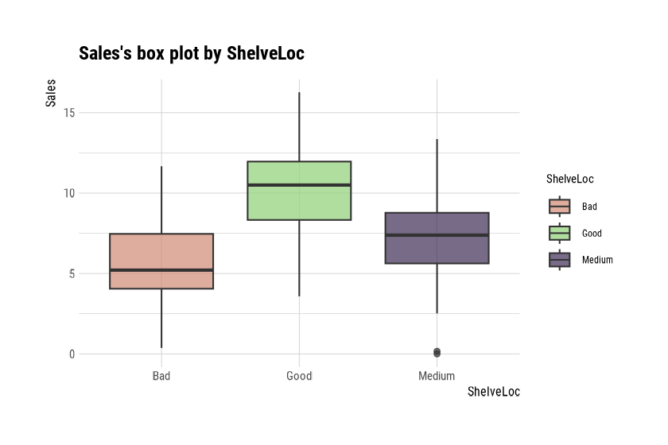

Preface
After you have acquired the data, you should do the following:
- Diagnose data quality.
- If there is a problem with data quality,
- The data must be corrected or re-acquired.
- Explore data to understand the data and find scenarios for performing the analysis.
- Derive new variables or perform variable transformations.
The dlookr package makes these steps fast and easy:
- Performs an data diagnosis or automatically generates a data diagnosis report.
- Discover data in a variety of ways, and automatically generate EDA(exploratory data analysis) report.
- Impute missing values and outliers, resolve skewed data, and categorize continuous variables into categorical variables. And generates an automated report to support it.
This document introduces EDA(Exploratory Data Analysis) methods provided by the dlookr package. You will learn how to EDA of tbl_df data that inherits from data.frame and data.frame with functions provided by dlookr.
dlookr increases synergy with dplyr. Particularly in data exploration and data wrangle, it increases the efficiency of the tidyverse package group.
Supported data structures
Data diagnosis supports the following data structures.
- data frame : data.frame class.
- data table : tbl_df class.
-
table of DBMS : table of the DBMS through tbl_dbi.
- Use dplyr as the back-end interface for any DBI-compatible database.
datasets
To illustrate the basic use of EDA in the dlookr package, I use a Carseats dataset. Carseats in the ISLR package is a simulated data set containing sales of child car seats at 400 different stores. This data is a data.frame created for the purpose of predicting sales volume.
library(ISLR) str(Carseats) 'data.frame': 400 obs. of 11 variables: $ Sales : num 9.5 11.22 10.06 7.4 4.15 ... $ CompPrice : num 138 111 113 117 141 124 115 136 132 132 ... $ Income : num 73 48 35 100 64 113 105 81 110 113 ... $ Advertising: num 11 16 10 4 3 13 0 15 0 0 ... $ Population : num 276 260 269 466 340 501 45 425 108 131 ... $ Price : num 120 83 80 97 128 72 108 120 124 124 ... $ ShelveLoc : Factor w/ 3 levels "Bad","Good","Medium": 1 2 3 3 1 1 3 2 3 3 ... $ Age : num 42 65 59 55 38 78 71 67 76 76 ... $ Education : num 17 10 12 14 13 16 15 10 10 17 ... $ Urban : Factor w/ 2 levels "No","Yes": 2 2 2 2 2 1 2 2 1 1 ... $ US : Factor w/ 2 levels "No","Yes": 2 2 2 2 1 2 1 2 1 2 ...
The contents of individual variables are as follows. (Refer to ISLR::Carseats Man page)
- Sales
- Unit sales (in thousands) at each location
- CompPrice
- Price charged by competitor at each location
- Income
- Community income level (in thousands of dollars)
- Advertising
- Local advertising budget for company at each location (in thousands of dollars)
- Population
- Population size in region (in thousands)
- Price
- Price company charges for car seats at each site
- ShelveLoc
- A factor with levels Bad, Good and Medium indicating the quality of the shelving location for the car seats at each site
- Age
- Average age of the local population
- Education
- Education level at each location
- Urban
- A factor with levels No and Yes to indicate whether the store is in an urban or rural location
- US
- A factor with levels No and Yes to indicate whether the store is in the US or not
When data analysis is performed, data containing missing values is frequently encountered. However, ‘Carseats’ is complete data without missing values. So the following script created the missing values and saved them as carseats.
carseats <- ISLR::Carseats suppressWarnings(RNGversion("3.5.0")) set.seed(123) carseats[sample(seq(NROW(carseats)), 20), "Income"] <- NA suppressWarnings(RNGversion("3.5.0")) set.seed(456) carseats[sample(seq(NROW(carseats)), 10), "Urban"] <- NA
Exploratory Data Analysis
dlookr can help to understand the distribution of data by calculating descriptive statistics of numerical data. In addition, correlation between variables is identified and normality test is performed. It also identifies the relationship between target variables and independent variables.:
The following is a list of the EDA functions included in the dlookr package.:
-
describe()provides descriptive statistics for numerical data. -
normality()andplot_normality()perform normalization and visualization of numerical data. -
correlate()andplot_correlate()calculate the correlation coefficient between two numerical data and provide visualization. -
target_by()defines the target variable andrelate()describes the relationship with the variables of interest corresponding to the target variable. -
plot.relate()visualizes the relationship to the variable of interest corresponding to the destination variable. -
eda_report()performs an exploratory data analysis and reports the results.
Univariate data EDA
Calculating descriptive statistics using describe()
describe() computes descriptive statistics for numerical data. The descriptive statistics help determine the distribution of numerical variables. Like function of dplyr, the first argument is the tibble (or data frame). The second and subsequent arguments refer to variables within that data frame.
The variables of the tbl_df object returned by describe() are as follows.
-
n: number of observations excluding missing values -
na: number of missing values -
mean: arithmetic average -
sd: standard deviation -
se_mean: standard error mean. sd/sqrt(n) -
IQR: interquartile range (Q3-Q1) -
skewness: skewness -
kurtosis: kurtosis -
p25: Q1. 25% percentile -
p50: median. 50% percentile -
p75: Q3. 75% percentile -
p01,p05,p10,p20,p30: 1%, 5%, 20%, 30% percentiles -
p40,p60,p70,p80: 40%, 60%, 70%, 80% percentiles -
p90,p95,p99,p100: 90%, 95%, 99%, 100% percentiles
For example, describe() can computes the statistics of all numerical variables in carseats:
describe(carseats) # A tibble: 8 x 26 variable n na mean sd se_mean IQR skewness kurtosis p00 p01 <chr> <int> <int> <dbl> <dbl> <dbl> <dbl> <dbl> <dbl> <dbl> <dbl> 1 Sales 400 0 7.50 2.82 0.141 3.93 0.186 -0.0809 0 0.906 2 CompPri… 400 0 125. 15.3 0.767 20 -0.0428 0.0417 77 89.0 3 Income 380 20 68.9 28.1 1.44 48.2 0.0449 -1.09 21 21.8 4 Adverti… 400 0 6.64 6.65 0.333 12 0.640 -0.545 0 0 # … with 4 more rows, and 15 more variables: p05 <dbl>, p10 <dbl>, p20 <dbl>, # p25 <dbl>, p30 <dbl>, p40 <dbl>, p50 <dbl>, p60 <dbl>, p70 <dbl>, # p75 <dbl>, p80 <dbl>, p90 <dbl>, p95 <dbl>, p99 <dbl>, p100 <dbl>
-
skewness: The left-skewed distribution data that is the variables with large positive skewness should consider the log or sqrt transformations to follow the normal distribution. The variablesAdvertisingseem to need to consider variable transformation. -
meanandsd,se_mean: ThePopulationwith a largestandard error of the mean(se_mean) has low representativeness of thearithmetic mean(mean). Thestandard deviation(sd) is much larger than the arithmetic average.
The following explains the descriptive statistics only for a few selected variables.:
# Select columns by name describe(carseats, Sales, CompPrice, Income) # A tibble: 3 x 26 variable n na mean sd se_mean IQR skewness kurtosis p00 p01 <chr> <int> <int> <dbl> <dbl> <dbl> <dbl> <dbl> <dbl> <dbl> <dbl> 1 Sales 400 0 7.50 2.82 0.141 3.93 0.186 -0.0809 0 0.906 2 CompPri… 400 0 125. 15.3 0.767 20 -0.0428 0.0417 77 89.0 3 Income 380 20 68.9 28.1 1.44 48.2 0.0449 -1.09 21 21.8 # … with 15 more variables: p05 <dbl>, p10 <dbl>, p20 <dbl>, p25 <dbl>, # p30 <dbl>, p40 <dbl>, p50 <dbl>, p60 <dbl>, p70 <dbl>, p75 <dbl>, # p80 <dbl>, p90 <dbl>, p95 <dbl>, p99 <dbl>, p100 <dbl> # Select all columns between year and day (include) describe(carseats, Sales:Income) # A tibble: 3 x 26 variable n na mean sd se_mean IQR skewness kurtosis p00 p01 <chr> <int> <int> <dbl> <dbl> <dbl> <dbl> <dbl> <dbl> <dbl> <dbl> 1 Sales 400 0 7.50 2.82 0.141 3.93 0.186 -0.0809 0 0.906 2 CompPri… 400 0 125. 15.3 0.767 20 -0.0428 0.0417 77 89.0 3 Income 380 20 68.9 28.1 1.44 48.2 0.0449 -1.09 21 21.8 # … with 15 more variables: p05 <dbl>, p10 <dbl>, p20 <dbl>, p25 <dbl>, # p30 <dbl>, p40 <dbl>, p50 <dbl>, p60 <dbl>, p70 <dbl>, p75 <dbl>, # p80 <dbl>, p90 <dbl>, p95 <dbl>, p99 <dbl>, p100 <dbl> # Select all columns except those from year to day (exclude) describe(carseats, -(Sales:Income)) # A tibble: 5 x 26 variable n na mean sd se_mean IQR skewness kurtosis p00 p01 <chr> <int> <int> <dbl> <dbl> <dbl> <dbl> <dbl> <dbl> <dbl> <dbl> 1 Adverti… 400 0 6.64 6.65 0.333 12 0.640 -0.545 0 0 2 Populat… 400 0 265. 147. 7.37 260. -0.0512 -1.20 10 16.0 3 Price 400 0 116. 23.7 1.18 31 -0.125 0.452 24 55.0 4 Age 400 0 53.3 16.2 0.810 26.2 -0.0772 -1.13 25 25 # … with 1 more row, and 15 more variables: p05 <dbl>, p10 <dbl>, p20 <dbl>, # p25 <dbl>, p30 <dbl>, p40 <dbl>, p50 <dbl>, p60 <dbl>, p70 <dbl>, # p75 <dbl>, p80 <dbl>, p90 <dbl>, p95 <dbl>, p99 <dbl>, p100 <dbl>
The describe() function can be sorted by left or right skewed size(skewness) using dplyr.:
carseats %>% describe() %>% select(variable, skewness, mean, p25, p50, p75) %>% filter(!is.na(skewness)) %>% arrange(desc(abs(skewness))) # A tibble: 8 x 6 variable skewness mean p25 p50 p75 <chr> <dbl> <dbl> <dbl> <dbl> <dbl> 1 Advertising 0.640 6.64 0 5 12 2 Sales 0.186 7.50 5.39 7.49 9.32 3 Price -0.125 116. 100 117 131 4 Age -0.0772 53.3 39.8 54.5 66 # … with 4 more rows
The describe() function supports the group_by() function syntax of the dplyr package.
carseats %>% group_by(US) %>% describe(Sales, Income) # A tibble: 4 x 27 variable US n na mean sd se_mean IQR skewness kurtosis p00 <chr> <fct> <int> <int> <dbl> <dbl> <dbl> <dbl> <dbl> <dbl> <dbl> 1 Income No 130 12 65.8 28.2 2.48 50 0.100 -1.14 22 2 Income Yes 250 8 70.4 27.9 1.77 48 0.0199 -1.06 21 3 Sales No 142 0 6.82 2.60 0.218 3.44 0.323 0.808 0 4 Sales Yes 258 0 7.87 2.88 0.179 4.23 0.0760 -0.326 0.37 # … with 16 more variables: p01 <dbl>, p05 <dbl>, p10 <dbl>, p20 <dbl>, # p25 <dbl>, p30 <dbl>, p40 <dbl>, p50 <dbl>, p60 <dbl>, p70 <dbl>, # p75 <dbl>, p80 <dbl>, p90 <dbl>, p95 <dbl>, p99 <dbl>, p100 <dbl>
carseats %>% group_by(US, Urban) %>% describe(Sales, Income) # A tibble: 12 x 28 variable US Urban n na mean sd se_mean IQR skewness kurtosis <chr> <fct> <fct> <int> <int> <dbl> <dbl> <dbl> <dbl> <dbl> <dbl> 1 Income No No 42 4 60.2 29.1 4.49 45.2 0.408 -1.00 2 Income No Yes 84 8 69.5 27.4 2.99 47 -0.0497 -1.11 3 Income No <NA> 4 0 48.2 24.7 12.3 40.8 -0.0496 -5.70 4 Income Yes No 65 4 70.5 29.9 3.70 48 0.0736 -1.08 # … with 8 more rows, and 17 more variables: p00 <dbl>, p01 <dbl>, p05 <dbl>, # p10 <dbl>, p20 <dbl>, p25 <dbl>, p30 <dbl>, p40 <dbl>, p50 <dbl>, # p60 <dbl>, p70 <dbl>, p75 <dbl>, p80 <dbl>, p90 <dbl>, p95 <dbl>, # p99 <dbl>, p100 <dbl>
Test of normality on numeric variables using normality()
normality() performs a normality test on numerical data. Shapiro-Wilk normality test is performed. When the number of observations is greater than 5000, it is tested after extracting 5000 samples by random simple sampling.
The variables of tbl_df object returned by normality() are as follows.
-
statistic: Statistics of the Shapiro-Wilk test -
p_value: p-value of the Shapiro-Wilk test -
sample: Number of sample observations performed Shapiro-Wilk test
normality() performs the normality test for all numerical variables of carseats as follows.:
normality(carseats) # A tibble: 8 x 4 vars statistic p_value sample <chr> <dbl> <dbl> <dbl> 1 Sales 0.995 2.54e- 1 400 2 CompPrice 0.998 9.77e- 1 400 3 Income 0.961 1.52e- 8 400 4 Advertising 0.874 1.49e-17 400 # … with 4 more rows
The following example performs a normality test on only a few selected variables.
# Select columns by name normality(carseats, Sales, CompPrice, Income) # A tibble: 3 x 4 vars statistic p_value sample <chr> <dbl> <dbl> <dbl> 1 Sales 0.995 0.254 400 2 CompPrice 0.998 0.977 400 3 Income 0.961 0.0000000152 400 # Select all columns between year and day (inclusive) normality(carseats, Sales:Income) # A tibble: 3 x 4 vars statistic p_value sample <chr> <dbl> <dbl> <dbl> 1 Sales 0.995 0.254 400 2 CompPrice 0.998 0.977 400 3 Income 0.961 0.0000000152 400 # Select all columns except those from year to day (inclusive) normality(carseats, -(Sales:Income)) # A tibble: 5 x 4 vars statistic p_value sample <chr> <dbl> <dbl> <dbl> 1 Advertising 0.874 1.49e-17 400 2 Population 0.952 4.08e-10 400 3 Price 0.996 3.90e- 1 400 4 Age 0.957 1.86e- 9 400 # … with 1 more row
You can use dplyr to sort variables that do not follow a normal distribution in order of p_value:
library(dplyr) carseats %>% normality() %>% filter(p_value <= 0.01) %>% arrange(abs(p_value)) # A tibble: 5 x 4 vars statistic p_value sample <chr> <dbl> <dbl> <dbl> 1 Advertising 0.874 1.49e-17 400 2 Education 0.924 2.43e-13 400 3 Population 0.952 4.08e-10 400 4 Age 0.957 1.86e- 9 400 # … with 1 more row
In particular, the Advertising variable is considered to be the most out of the normal distribution.
The normality() function supports the group_by() function syntax in the dplyr package.
carseats %>% group_by(ShelveLoc, US) %>% normality(Income) %>% arrange(desc(p_value)) # A tibble: 6 x 6 variable ShelveLoc US statistic p_value sample <chr> <fct> <fct> <dbl> <dbl> <dbl> 1 Income Bad No 0.969 0.470 34 2 Income Bad Yes 0.958 0.0343 62 3 Income Good No 0.902 0.0328 24 4 Income Good Yes 0.955 0.0296 61 # … with 2 more rows
The Income variable does not follow the normal distribution. However, the case where US is No and ShelveLoc is Good and Bad at the significance level of 0.01, it follows the normal distribution.
The following example performs normality test of log(Income) for each combination of ShelveLoc and US categorical variables to search for variables that follow the normal distribution.
carseats %>% mutate(log_income = log(Income)) %>% group_by(ShelveLoc, US) %>% normality(log_income) %>% filter(p_value > 0.01) # A tibble: 1 x 6 variable ShelveLoc US statistic p_value sample <chr> <fct> <fct> <dbl> <dbl> <dbl> 1 log_income Bad No 0.940 0.0737 34
Visualization of normality of numerical variables using plot_normality()
plot_normality() visualizes the normality of numeric data.
The information visualized by plot_normality() is as follows.:
Histogram of original dataQ-Q plot of original datahistogram of log transformed dataHistogram of square root transformed data
In the data analysis process, it often encounters numerical data that follows the power-law distribution. Since the numerical data that follows the power-law distribution is converted into a normal distribution by performing the log or sqrt transformation, so draw a histogram of the log and sqrt transformed data.
plot_normality() can also specify several variables like normality() function.
# Select columns by name plot_normality(carseats, Sales, CompPrice)

The plot_normality() function also supports the group_by() function syntax in the dplyr package.
carseats %>% filter(ShelveLoc == "Good") %>% group_by(US) %>% plot_normality(Income)
EDA of bivariate data
Calculation of correlation coefficient using correlate()
correlate() calculates the correlation coefficient of all combinations of carseats numerical variables as follows:
correlate(carseats) # A tibble: 56 x 3 var1 var2 coef_corr <fct> <fct> <dbl> 1 CompPrice Sales 0.0641 2 Income Sales 0.151 3 Advertising Sales 0.270 4 Population Sales 0.0505 # … with 52 more rows
The following example performs a normality test only on combinations that include several selected variables.
# Select columns by name correlate(carseats, Sales, CompPrice, Income) # A tibble: 21 x 3 var1 var2 coef_corr <fct> <fct> <dbl> 1 CompPrice Sales 0.0641 2 Income Sales 0.151 3 Sales CompPrice 0.0641 4 Income CompPrice -0.0761 # … with 17 more rows # Select all columns between year and day (include) correlate(carseats, Sales:Income) # A tibble: 21 x 3 var1 var2 coef_corr <fct> <fct> <dbl> 1 CompPrice Sales 0.0641 2 Income Sales 0.151 3 Sales CompPrice 0.0641 4 Income CompPrice -0.0761 # … with 17 more rows # Select all columns except those from year to day (exclude) correlate(carseats, -(Sales:Income)) # A tibble: 35 x 3 var1 var2 coef_corr <fct> <fct> <dbl> 1 Advertising Sales 0.270 2 Population Sales 0.0505 3 Price Sales -0.445 4 Age Sales -0.232 # … with 31 more rows
correlate() produces two pairs of variables. So the following example uses filter() to get the correlation coefficient for a pair of variable combinations:
carseats %>% correlate(Sales:Income) %>% filter(as.integer(var1) > as.integer(var2)) # A tibble: 3 x 3 var1 var2 coef_corr <fct> <fct> <dbl> 1 CompPrice Sales 0.0641 2 Income Sales 0.151 3 Income CompPrice -0.0761
The correlate() also supports the group_by() function syntax in the dplyr package.
carseats %>% filter(ShelveLoc == "Good") %>% group_by(Urban, US) %>% correlate(Sales) %>% filter(abs(coef_corr) > 0.5) # A tibble: 10 x 5 Urban US var1 var2 coef_corr <fct> <fct> <fct> <fct> <dbl> 1 No No Sales Population -0.530 2 No No Sales Price -0.838 3 No Yes Sales Price -0.630 4 Yes No Sales Price -0.833 # … with 6 more rows
Visualization of the correlation matrix using plot_correlate()
plot_correlate() visualizes the correlation matrix.
plot_correlate(carseats)

plot_correlate() can also specify multiple variables, like the correlate() function. The following is a visualization of the correlation matrix including several selected variables.
# Select columns by name plot_correlate(carseats, Sales, Price)
The plot_correlate() function also supports the group_by() function syntax in the dplyr package.
carseats %>% filter(ShelveLoc == "Good") %>% group_by(Urban) %>% plot_correlate(Sales)
EDA based on target variable
Definition of target variable
To perform EDA based on target variable, you need to create a target_by class object. target_by() creates a target_by class with an object inheriting data.frame or data.frame. target_by() is similar to group_by() in dplyr which creates grouped_df. The difference is that you specify only one variable.
The following is an example of specifying US as target variable in carseats data.frame.:
categ <- target_by(carseats, US)
EDA when target variable is categorical variable
Let’s perform EDA when the target variable is a categorical variable. When the categorical variable US is the target variable, we examine the relationship between the target variable and the predictor.
Cases where predictors are numeric variable
relate() shows the relationship between the target variable and the predictor. The following example shows the relationship between Sales and the target variable US. The predictor Sales is a numeric variable. In this case, the descriptive statistics are shown for each level of the target variable.
# If the variable of interest is a numerical variable
cat_num <- relate(categ, Sales)
cat_num
# A tibble: 3 x 27
variable US n na mean sd se_mean IQR skewness kurtosis p00
<chr> <fct> <int> <int> <dbl> <dbl> <dbl> <dbl> <dbl> <dbl> <dbl>
1 Sales No 142 0 6.82 2.60 0.218 3.44 0.323 0.808 0
2 Sales Yes 258 0 7.87 2.88 0.179 4.23 0.0760 -0.326 0.37
3 Sales total 400 0 7.50 2.82 0.141 3.93 0.186 -0.0809 0
# … with 16 more variables: p01 <dbl>, p05 <dbl>, p10 <dbl>, p20 <dbl>,
# p25 <dbl>, p30 <dbl>, p40 <dbl>, p50 <dbl>, p60 <dbl>, p70 <dbl>,
# p75 <dbl>, p80 <dbl>, p90 <dbl>, p95 <dbl>, p99 <dbl>, p100 <dbl>
summary(cat_num)
variable US n na mean
Length:3 No :1 Min. :142.0 Min. :0 Min. :6.823
Class :character Yes :1 1st Qu.:200.0 1st Qu.:0 1st Qu.:7.160
Mode :character total:1 Median :258.0 Median :0 Median :7.496
Mean :266.7 Mean :0 Mean :7.395
3rd Qu.:329.0 3rd Qu.:0 3rd Qu.:7.682
Max. :400.0 Max. :0 Max. :7.867
sd se_mean IQR skewness
Min. :2.603 Min. :0.1412 Min. :3.442 Min. :0.07603
1st Qu.:2.713 1st Qu.:0.1602 1st Qu.:3.686 1st Qu.:0.13080
Median :2.824 Median :0.1791 Median :3.930 Median :0.18556
Mean :2.768 Mean :0.1796 Mean :3.866 Mean :0.19489
3rd Qu.:2.851 3rd Qu.:0.1988 3rd Qu.:4.077 3rd Qu.:0.25432
Max. :2.877 Max. :0.2184 Max. :4.225 Max. :0.32308
kurtosis p00 p01 p05
Min. :-0.32638 Min. :0.0000 Min. :0.4675 Min. :3.147
1st Qu.:-0.20363 1st Qu.:0.0000 1st Qu.:0.6868 1st Qu.:3.148
Median :-0.08088 Median :0.0000 Median :0.9062 Median :3.149
Mean : 0.13350 Mean :0.1233 Mean :1.0072 Mean :3.183
3rd Qu.: 0.36344 3rd Qu.:0.1850 3rd Qu.:1.2771 3rd Qu.:3.200
Max. : 0.80776 Max. :0.3700 Max. :1.6480 Max. :3.252
p10 p20 p25 p30
Min. :3.917 Min. :4.754 Min. :5.080 Min. :5.306
1st Qu.:4.018 1st Qu.:4.910 1st Qu.:5.235 1st Qu.:5.587
Median :4.119 Median :5.066 Median :5.390 Median :5.867
Mean :4.073 Mean :5.051 Mean :5.411 Mean :5.775
3rd Qu.:4.152 3rd Qu.:5.199 3rd Qu.:5.576 3rd Qu.:6.010
Max. :4.184 Max. :5.332 Max. :5.763 Max. :6.153
p40 p50 p60 p70
Min. :5.994 Min. :6.660 Min. :7.496 Min. :7.957
1st Qu.:6.301 1st Qu.:7.075 1st Qu.:7.787 1st Qu.:8.386
Median :6.608 Median :7.490 Median :8.078 Median :8.815
Mean :6.506 Mean :7.313 Mean :8.076 Mean :8.740
3rd Qu.:6.762 3rd Qu.:7.640 3rd Qu.:8.366 3rd Qu.:9.132
Max. :6.916 Max. :7.790 Max. :8.654 Max. :9.449
p75 p80 p90 p95
Min. :8.523 Min. : 8.772 Min. : 9.349 Min. :11.28
1st Qu.:8.921 1st Qu.: 9.265 1st Qu.:10.325 1st Qu.:11.86
Median :9.320 Median : 9.758 Median :11.300 Median :12.44
Mean :9.277 Mean : 9.665 Mean :10.795 Mean :12.08
3rd Qu.:9.654 3rd Qu.:10.111 3rd Qu.:11.518 3rd Qu.:12.49
Max. :9.988 Max. :10.464 Max. :11.736 Max. :12.54
p99 p100
Min. :13.64 Min. :14.90
1st Qu.:13.78 1st Qu.:15.59
Median :13.91 Median :16.27
Mean :13.86 Mean :15.81
3rd Qu.:13.97 3rd Qu.:16.27
Max. :14.03 Max. :16.27 plot() visualizes the relate class object created by relate() as the relationship between the target variable and the predictor variable. The relationship between US and Sales is visualized by density plot.
plot(cat_num)

Cases where predictors are categorical variable
The following example shows the relationship between ShelveLoc and the target variable US. The predictor variable ShelveLoc is a categorical variable. In this case, it shows the contingency table of two variables. The summary() function performs independence test on the contingency table.
# If the variable of interest is a categorical variable
cat_cat <- relate(categ, ShelveLoc)
cat_cat
ShelveLoc
US Bad Good Medium
No 34 24 84
Yes 62 61 135
summary(cat_cat)
Call: xtabs(formula = formula_str, data = data, addNA = TRUE)
Number of cases in table: 400
Number of factors: 2
Test for independence of all factors:
Chisq = 2.7397, df = 2, p-value = 0.2541plot() visualizes the relationship between the target variable and the predictor. The relationship between US and ShelveLoc is represented by a mosaics plot.
plot(cat_cat)

EDA when target variable is numerical variable
Let’s perform EDA when the target variable is numeric. When the numeric variable Sales is the target variable, we examine the relationship between the target variable and the predictor.
# If the variable of interest is a numerical variable num <- target_by(carseats, Sales)
Cases where predictors are numeric variable
The following example shows the relationship between Price and the target variable Sales. The predictor variable Price is a numeric variable. In this case, it shows the result of a simple linear model of the target ~ predictor formula. The summary() function expresses the details of the model.
# If the variable of interest is a numerical variable
num_num <- relate(num, Price)
num_num
Call:
lm(formula = formula_str, data = data)
Coefficients:
(Intercept) Price
13.64192 -0.05307
summary(num_num)
Call:
lm(formula = formula_str, data = data)
Residuals:
Min 1Q Median 3Q Max
-6.5224 -1.8442 -0.1459 1.6503 7.5108
Coefficients:
Estimate Std. Error t value Pr(>|t|)
(Intercept) 13.641915 0.632812 21.558 <2e-16 ***
Price -0.053073 0.005354 -9.912 <2e-16 ***
---
Signif. codes: 0 '***' 0.001 '**' 0.01 '*' 0.05 '.' 0.1 ' ' 1
Residual standard error: 2.532 on 398 degrees of freedom
Multiple R-squared: 0.198, Adjusted R-squared: 0.196
F-statistic: 98.25 on 1 and 398 DF, p-value: < 2.2e-16plot() visualizes the relationship between the target and predictor variables. The relationship between Sales and Price is visualized with a scatter plot. The figure on the left shows the scatter plot of Sales and Price and the confidence interval of the regression line and regression line. The figure on the right shows the relationship between the original data and the predicted values of the linear model as a scatter plot. If there is a linear relationship between the two variables, the scatter plot of the observations converges on the red diagonal line.
plot(num_num)

The scatter plot of the data with a large number of observations is output as overlapping points. This makes it difficult to judge the relationship between the two variables. It also takes a long time to perform the visualization. In this case, the above problem can be solved by hexabin plot.
In plot(), the hex_thres argument provides a basis for drawing hexabin plot. If the number of observations is greater than hex_thres, draw a hexabin plot.
The following example visualizes the hexabin plot rather than the scatter plot by specifying 350 for the hex_thres argument. This is because the number of observations is 400.
plot(num_num, hex_thres = 350)

Cases where predictors are categorical variable
The following example shows the relationship between ShelveLoc and the target variable Sales. The predictor ShelveLoc is a categorical variable and shows the result of one-way ANOVA of target ~ predictor relationship. The results are expressed in terms of ANOVA. The summary() function shows the regression coefficients for each level of the predictor. In other words, it shows detailed information about simple regression analysis of target ~ predictor relationship.
# If the variable of interest is a categorical variable
num_cat <- relate(num, ShelveLoc)
num_cat
Analysis of Variance Table
Response: Sales
Df Sum Sq Mean Sq F value Pr(>F)
ShelveLoc 2 1009.5 504.77 92.23 < 2.2e-16 ***
Residuals 397 2172.7 5.47
---
Signif. codes: 0 '***' 0.001 '**' 0.01 '*' 0.05 '.' 0.1 ' ' 1
summary(num_cat)
Call:
lm(formula = formula(formula_str), data = data)
Residuals:
Min 1Q Median 3Q Max
-7.3066 -1.6282 -0.0416 1.5666 6.1471
Coefficients:
Estimate Std. Error t value Pr(>|t|)
(Intercept) 5.5229 0.2388 23.131 < 2e-16 ***
ShelveLocGood 4.6911 0.3484 13.464 < 2e-16 ***
ShelveLocMedium 1.7837 0.2864 6.229 1.2e-09 ***
---
Signif. codes: 0 '***' 0.001 '**' 0.01 '*' 0.05 '.' 0.1 ' ' 1
Residual standard error: 2.339 on 397 degrees of freedom
Multiple R-squared: 0.3172, Adjusted R-squared: 0.3138
F-statistic: 92.23 on 2 and 397 DF, p-value: < 2.2e-16plot() visualizes the relationship between the target variable and the predictor. The relationship between Sales and ShelveLoc is represented by a box plot.
plot(num_cat)

Automated report
dlookr provides two automated EDA reports:
- Web page-based dynamic reports can perform in-depth analysis through visualization and statistical tables.
- Static reports generated as pdf files or html files can be archived as output of data analysis.
Create a dynamic report using eda_web_report()
eda_web_report() create dynamic report for object inherited from data.frame(tbl_df, tbl, etc) or data.frame.
Contents of dynamic web report
The contents of the report are as follows.:
- Overview
- Data Structures
- Data Types
- Job Informations
- Univariate Analysis
- Descriptive Statistics
- Normality Test
- Bivariate Analysis
- Compare Numerical Variables
- Compare Categorical Variables
- Multivariate Analysis
- Correlation Analysis
- Correlation Matrix
- Correlation Plot
- Correlation Analysis
- Target based Analysis
- Grouped Numerical Variables
- Grouped Categorical Variables
- Grouped Correlation
Some arguments for dynamic web report
eda_web_report() generates various reports with the following arguments.
- target
- target variable
- output_file
- name of generated file.
- output_dir
- name of directory to generate report file.
- title
- title of report.
- subtitle
- subtitle of report.
- author
- author of report.
- title_color
- color of title.
- logo_img
- name of logo image file on top left.
- create_date
- The date on which the report is generated.
- theme
- name of theme for report. support “orange” and “blue”.
- sample_percent
- Sample percent of data for performing EDA.
The following script creates a EDA report for the data.frame class object, heartfailure.
heartfailure %>% eda_web_report(target = "death_event", subtitle = "heartfailure", output_dir = "./", output_file = "EDA.html", theme = "blue")

Create a EDA report using eda_paged_report()
eda_paged_report() create static report for object inherited from data.frame(tbl_df, tbl, etc) or data.frame.
Contents of static paged report
The contents of the report are as follows.:
- Overview
- Data Structures
- Job Informations
- Univariate Analysis
- Descriptive Statistics
- Numerical Variables
- Categorical Variables
- Normality Test
- Descriptive Statistics
- Bivariate Analysis
- Compare Numerical Variables
- Compare Categorical Variables
- Multivariate Analysis
- Correlation Analysis
- Correlation Coefficient Matrix
- Correlation Plot
- Correlation Analysis
- Target based Analysis
- Grouped Numerical Variables
- Grouped Categorical Variables
- Grouped Correlation
Some arguments for static paged report
eda_paged_report() generates various reports with the following arguments.
- target
- target variable
- output_format
- report output type. Choose either “pdf” and “html”.
- output_file
- name of generated file.
- output_dir
- name of directory to generate report file.
- title
- title of report.
- subtitle
- subtitle of report.
- abstract_title
- abstract of report
- author
- author of report.
- title_color
- color of title.
- subtitle_color
- color of subtitle.
- logo_img
- name of logo image file on top left.
- cover_img
- name of cover image file on center.
- create_date
- The date on which the report is generated.
- theme
- name of theme for report. support “orange” and “blue”.
- sample_percent
- Sample percent of data for performing EDA.
The following script creates a EDA report for the data.frame class object, heartfailure.
heartfailure %>% eda_paged_report(target = "death_event", subtitle = "heartfailure", output_dir = "./", output_file = "EDA.pdf", theme = "blue")


Exploratory data analysis for tables in DBMS
EDA function for table of DBMS supports In-database mode that performs SQL operations on the DBMS side. If the size of the data is large, using In-database mode is faster.
It is difficult to obtain anomaly or to implement the sampling-based algorithm in SQL of DBMS. So some functions do not yet support In-database mode. In this case, it is performed in In-memory mode in which table data is brought to R side and calculated. In this case, if the data size is large, the execution speed may be slow. It supports the collect_size argument, which allows you to import the specified number of samples of data into R.
- In-database support functions
- none
- In-database not support functions
Preparing table data
Copy the carseats data frame to the SQLite DBMS and create it as a table named TB_CARSEATS. Mysql/MariaDB, PostgreSQL, Oracle DBMS, other DBMS are also available for your environment.
if (!require(DBI)) install.packages('DBI') if (!require(RSQLite)) install.packages('RSQLite') if (!require(dplyr)) install.packages('dplyr') if (!require(dbplyr)) install.packages('dbplyr') library(dplyr) carseats <- ISLR::Carseats carseats[sample(seq(NROW(carseats)), 20), "Income"] <- NA carseats[sample(seq(NROW(carseats)), 5), "Urban"] <- NA # connect DBMS con_sqlite <- DBI::dbConnect(RSQLite::SQLite(), ":memory:") # copy carseats to the DBMS with a table named TB_CARSEATS copy_to(con_sqlite, carseats, name = "TB_CARSEATS", overwrite = TRUE)
Calculating descriptive statistics of numerical column of table in the DBMS
Use dplyr::tbl() to create a tbl_dbi object, then use it as a data frame object. That is, the data argument of all EDA function is specified as tbl_dbi object instead of data frame object.
# Positive values select variables
con_sqlite %>%
tbl("TB_CARSEATS") %>%
describe(Sales, CompPrice, Income)
# A tibble: 3 x 26
variable n na mean sd se_mean IQR skewness kurtosis p00 p01
<chr> <int> <int> <dbl> <dbl> <dbl> <dbl> <dbl> <dbl> <dbl> <dbl>
1 Sales 400 0 7.50 2.82 0.141 3.93 0.186 -0.0809 0 0.906
2 CompPri… 400 0 125. 15.3 0.767 20 -0.0428 0.0417 77 89.0
3 Income 380 20 68.8 28.0 1.44 47.2 0.0641 -1.08 21 21.8
# … with 15 more variables: p05 <dbl>, p10 <dbl>, p20 <dbl>, p25 <dbl>,
# p30 <dbl>, p40 <dbl>, p50 <dbl>, p60 <dbl>, p70 <dbl>, p75 <dbl>,
# p80 <dbl>, p90 <dbl>, p95 <dbl>, p99 <dbl>, p100 <dbl>
# Negative values to drop variables, and In-memory mode and collect size is 200
con_sqlite %>%
tbl("TB_CARSEATS") %>%
describe(-Sales, -CompPrice, -Income, collect_size = 200)
# A tibble: 5 x 26
variable n na mean sd se_mean IQR skewness kurtosis p00 p01
<chr> <int> <int> <dbl> <dbl> <dbl> <dbl> <dbl> <dbl> <dbl> <dbl>
1 Adverti… 200 0 5.88 6.07 0.429 11 0.648 -0.667 0 0
2 Populat… 200 0 255. 149. 10.6 251. 0.0241 -1.22 10 16
3 Price 200 0 114. 23.7 1.68 31.2 -0.107 1.08 24 54.9
4 Age 200 0 54.6 15.9 1.13 24 -0.245 -1.01 25 25
# … with 1 more row, and 15 more variables: p05 <dbl>, p10 <dbl>, p20 <dbl>,
# p25 <dbl>, p30 <dbl>, p40 <dbl>, p50 <dbl>, p60 <dbl>, p70 <dbl>,
# p75 <dbl>, p80 <dbl>, p90 <dbl>, p95 <dbl>, p99 <dbl>, p100 <dbl>
# Find the statistic of all numerical variables by 'ShelveLoc' and 'US',
# and extract only those with 'ShelveLoc' variable level is "Good".
con_sqlite %>%
tbl("TB_CARSEATS") %>%
group_by(ShelveLoc, US) %>%
describe() %>%
filter(ShelveLoc == "Good")
# A tibble: 16 x 28
variable ShelveLoc US n na mean sd se_mean IQR skewness
<chr> <chr> <chr> <int> <int> <dbl> <dbl> <dbl> <dbl> <dbl>
1 Advertising Good No 24 0 0.0417 0.204 0.0417 0 4.90
2 Advertising Good Yes 61 0 10.2 5.91 0.757 7 0.0647
3 Age Good No 24 0 52.3 17.2 3.52 26 -0.158
4 Age Good Yes 61 0 52.7 14.8 1.90 22 -0.136
# … with 12 more rows, and 18 more variables: kurtosis <dbl>, p00 <dbl>,
# p01 <dbl>, p05 <dbl>, p10 <dbl>, p20 <dbl>, p25 <dbl>, p30 <dbl>,
# p40 <dbl>, p50 <dbl>, p60 <dbl>, p70 <dbl>, p75 <dbl>, p80 <dbl>,
# p90 <dbl>, p95 <dbl>, p99 <dbl>, p100 <dbl>
# extract only those with 'Urban' variable level is "Yes",
# and find 'Sales' statistics by 'ShelveLoc' and 'US'
con_sqlite %>%
tbl("TB_CARSEATS") %>%
filter(Urban == "Yes") %>%
group_by(ShelveLoc, US) %>%
describe(Sales)
# A tibble: 6 x 28
variable ShelveLoc US n na mean sd se_mean IQR skewness
<chr> <chr> <chr> <int> <int> <dbl> <dbl> <dbl> <dbl> <dbl>
1 Sales Bad No 23 0 5.36 1.91 0.398 2.32 -0.275
2 Sales Bad Yes 50 0 5.54 2.57 0.364 3.74 0.216
3 Sales Good No 18 0 9.21 2.97 0.700 3.71 0.0291
4 Sales Good Yes 37 0 10.9 2.37 0.389 3.41 -0.0714
# … with 2 more rows, and 18 more variables: kurtosis <dbl>, p00 <dbl>,
# p01 <dbl>, p05 <dbl>, p10 <dbl>, p20 <dbl>, p25 <dbl>, p30 <dbl>,
# p40 <dbl>, p50 <dbl>, p60 <dbl>, p70 <dbl>, p75 <dbl>, p80 <dbl>,
# p90 <dbl>, p95 <dbl>, p99 <dbl>, p100 <dbl>Test of normality on numeric columns using in the DBMS
# Test all numerical variables by 'ShelveLoc' and 'US',
# and extract only those with 'ShelveLoc' variable level is "Good".
con_sqlite %>%
tbl("TB_CARSEATS") %>%
group_by(ShelveLoc, US) %>%
normality() %>%
filter(ShelveLoc == "Good")
# A tibble: 16 x 6
variable ShelveLoc US statistic p_value sample
<chr> <chr> <chr> <dbl> <dbl> <dbl>
1 Sales Good No 0.955 0.342 24
2 Sales Good Yes 0.983 0.567 61
3 CompPrice Good No 0.970 0.658 24
4 CompPrice Good Yes 0.984 0.598 61
# … with 12 more rows
# extract only those with 'Urban' variable level is "Yes",
# and test 'Sales' by 'ShelveLoc' and 'US'
con_sqlite %>%
tbl("TB_CARSEATS") %>%
filter(Urban == "Yes") %>%
group_by(ShelveLoc, US) %>%
normality(Sales)
# A tibble: 6 x 6
variable ShelveLoc US statistic p_value sample
<chr> <chr> <chr> <dbl> <dbl> <dbl>
1 Sales Bad No 0.985 0.968 23
2 Sales Bad Yes 0.985 0.774 50
3 Sales Good No 0.959 0.576 18
4 Sales Good Yes 0.969 0.384 37
# … with 2 more rows
# Test log(Income) variables by 'ShelveLoc' and 'US',
# and extract only p.value greater than 0.01.
# SQLite extension functions for log transformation
RSQLite::initExtension(con_sqlite)
con_sqlite %>%
tbl("TB_CARSEATS") %>%
mutate(log_income = log(Income)) %>%
group_by(ShelveLoc, US) %>%
normality(log_income) %>%
filter(p_value > 0.01)
# A tibble: 1 x 6
variable ShelveLoc US statistic p_value sample
<chr> <chr> <chr> <dbl> <dbl> <dbl>
1 log_income Bad No 0.946 0.104 34Normalization visualization of numerical column in the DBMS
# extract only those with 'ShelveLoc' variable level is "Good", # and plot 'Income' by 'US' # the result is same as a data.frame, but not display here. reference above in document. con_sqlite %>% tbl("TB_CARSEATS") %>% filter(ShelveLoc == "Good") %>% group_by(US) %>% plot_normality(Income)
Compute the correlation coefficient between two columns of table in DBMS
# Correlation coefficient
# that eliminates redundant combination of variables
con_sqlite %>%
tbl("TB_CARSEATS") %>%
correlate() %>%
filter(as.integer(var1) > as.integer(var2))
# A tibble: 28 x 3
var1 var2 coef_corr
<fct> <fct> <dbl>
1 CompPrice Sales 0.0641
2 Income Sales 0.141
3 Advertising Sales 0.270
4 Population Sales 0.0505
# … with 24 more rows
con_sqlite %>%
tbl("TB_CARSEATS") %>%
correlate(Sales, Price) %>%
filter(as.integer(var1) > as.integer(var2))
# A tibble: 5 x 3
var1 var2 coef_corr
<fct> <fct> <dbl>
1 Price Sales -0.445
2 Price CompPrice 0.585
3 Price Income -0.0484
4 Price Advertising 0.0445
# … with 1 more row
# Compute the correlation coefficient of Sales variable by 'ShelveLoc'
# and 'US' variables. And extract only those with absolute
# value of correlation coefficient is greater than 0.5
con_sqlite %>%
tbl("TB_CARSEATS") %>%
group_by(ShelveLoc, US) %>%
correlate(Sales) %>%
filter(abs(coef_corr) >= 0.5)
# A tibble: 6 x 5
ShelveLoc US var1 var2 coef_corr
<chr> <chr> <fct> <fct> <dbl>
1 Bad No Sales Price -0.527
2 Bad Yes Sales Price -0.583
3 Good No Sales Price -0.811
4 Good Yes Sales Price -0.603
# … with 2 more rows
# extract only those with 'ShelveLoc' variable level is "Good",
# and compute the correlation coefficient of 'Sales' variable
# by 'Urban' and 'US' variables.
# And the correlation coefficient is negative and smaller than 0.5
con_sqlite %>%
tbl("TB_CARSEATS") %>%
filter(ShelveLoc == "Good") %>%
group_by(Urban, US) %>%
correlate(Sales) %>%
filter(coef_corr < 0) %>%
filter(abs(coef_corr) > 0.5)
# A tibble: 10 x 5
Urban US var1 var2 coef_corr
<chr> <chr> <fct> <fct> <dbl>
1 No No Sales Population -0.530
2 No No Sales Price -0.838
3 No Yes Sales Price -0.644
4 Yes No Sales Price -0.833
# … with 6 more rowsVisualize correlation plot of numerical columns in the DBMS
# Extract only those with 'ShelveLoc' variable level is "Good", # and visualize correlation plot of 'Sales' variable by 'Urban' # and 'US' variables. # the result is same as a data.frame, but not display here. reference above in document. con_sqlite %>% tbl("TB_CARSEATS") %>% filter(ShelveLoc == "Good") %>% group_by(Urban) %>% plot_correlate(Sales)
EDA based on target variable
The following is an EDA where the target column is character and the predictor column is a numeric type.
# If the target variable is a categorical variable
categ <- target_by(con_sqlite %>% tbl("TB_CARSEATS") , US)
# If the variable of interest is a numerical variable
cat_num <- relate(categ, Sales)
cat_num
# A tibble: 3 x 27
variable US n na mean sd se_mean IQR skewness kurtosis p00
<chr> <fct> <int> <int> <dbl> <dbl> <dbl> <dbl> <dbl> <dbl> <dbl>
1 Sales No 142 0 6.82 2.60 0.218 3.44 0.323 0.808 0
2 Sales Yes 258 0 7.87 2.88 0.179 4.23 0.0760 -0.326 0.37
3 Sales total 400 0 7.50 2.82 0.141 3.93 0.186 -0.0809 0
# … with 16 more variables: p01 <dbl>, p05 <dbl>, p10 <dbl>, p20 <dbl>,
# p25 <dbl>, p30 <dbl>, p40 <dbl>, p50 <dbl>, p60 <dbl>, p70 <dbl>,
# p75 <dbl>, p80 <dbl>, p90 <dbl>, p95 <dbl>, p99 <dbl>, p100 <dbl>
summary(cat_num)
variable US n na mean
Length:3 No :1 Min. :142.0 Min. :0 Min. :6.823
Class :character Yes :1 1st Qu.:200.0 1st Qu.:0 1st Qu.:7.160
Mode :character total:1 Median :258.0 Median :0 Median :7.496
Mean :266.7 Mean :0 Mean :7.395
3rd Qu.:329.0 3rd Qu.:0 3rd Qu.:7.682
Max. :400.0 Max. :0 Max. :7.867
sd se_mean IQR skewness
Min. :2.603 Min. :0.1412 Min. :3.442 Min. :0.07603
1st Qu.:2.713 1st Qu.:0.1602 1st Qu.:3.686 1st Qu.:0.13080
Median :2.824 Median :0.1791 Median :3.930 Median :0.18556
Mean :2.768 Mean :0.1796 Mean :3.866 Mean :0.19489
3rd Qu.:2.851 3rd Qu.:0.1988 3rd Qu.:4.077 3rd Qu.:0.25432
Max. :2.877 Max. :0.2184 Max. :4.225 Max. :0.32308
kurtosis p00 p01 p05
Min. :-0.32638 Min. :0.0000 Min. :0.4675 Min. :3.147
1st Qu.:-0.20363 1st Qu.:0.0000 1st Qu.:0.6868 1st Qu.:3.148
Median :-0.08088 Median :0.0000 Median :0.9062 Median :3.149
Mean : 0.13350 Mean :0.1233 Mean :1.0072 Mean :3.183
3rd Qu.: 0.36344 3rd Qu.:0.1850 3rd Qu.:1.2771 3rd Qu.:3.200
Max. : 0.80776 Max. :0.3700 Max. :1.6480 Max. :3.252
p10 p20 p25 p30
Min. :3.917 Min. :4.754 Min. :5.080 Min. :5.306
1st Qu.:4.018 1st Qu.:4.910 1st Qu.:5.235 1st Qu.:5.587
Median :4.119 Median :5.066 Median :5.390 Median :5.867
Mean :4.073 Mean :5.051 Mean :5.411 Mean :5.775
3rd Qu.:4.152 3rd Qu.:5.199 3rd Qu.:5.576 3rd Qu.:6.010
Max. :4.184 Max. :5.332 Max. :5.763 Max. :6.153
p40 p50 p60 p70
Min. :5.994 Min. :6.660 Min. :7.496 Min. :7.957
1st Qu.:6.301 1st Qu.:7.075 1st Qu.:7.787 1st Qu.:8.386
Median :6.608 Median :7.490 Median :8.078 Median :8.815
Mean :6.506 Mean :7.313 Mean :8.076 Mean :8.740
3rd Qu.:6.762 3rd Qu.:7.640 3rd Qu.:8.366 3rd Qu.:9.132
Max. :6.916 Max. :7.790 Max. :8.654 Max. :9.449
p75 p80 p90 p95
Min. :8.523 Min. : 8.772 Min. : 9.349 Min. :11.28
1st Qu.:8.921 1st Qu.: 9.265 1st Qu.:10.325 1st Qu.:11.86
Median :9.320 Median : 9.758 Median :11.300 Median :12.44
Mean :9.277 Mean : 9.665 Mean :10.795 Mean :12.08
3rd Qu.:9.654 3rd Qu.:10.111 3rd Qu.:11.518 3rd Qu.:12.49
Max. :9.988 Max. :10.464 Max. :11.736 Max. :12.54
p99 p100
Min. :13.64 Min. :14.90
1st Qu.:13.78 1st Qu.:15.59
Median :13.91 Median :16.27
Mean :13.86 Mean :15.81
3rd Qu.:13.97 3rd Qu.:16.27
Max. :14.03 Max. :16.27 # the result is same as a data.frame, but not display here. reference above in document. plot(cat_num)
Reporting the information of EDA for table of the DBMS
The following shows several examples of creating an EDA report for a DBMS table.
Using the collect_size argument, you can perform EDA with the corresponding number of sample data. If the number of data is very large, use collect_size.
# create web report file. con_sqlite %>% tbl("TB_CARSEATS") %>% eda_web_report() # create pdf file. file name is EDA.pdf, and collect size is 350 con_sqlite %>% tbl("TB_CARSEATS") %>% eda_paged_report(collect_size = 350, output_file = "EDA.pdf")